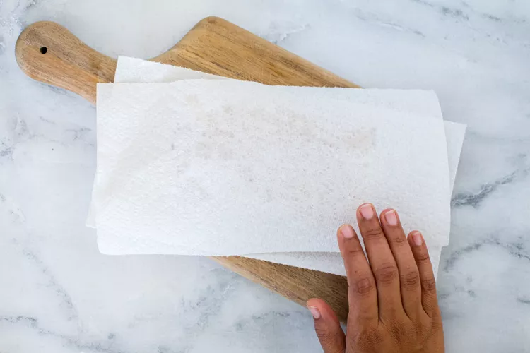
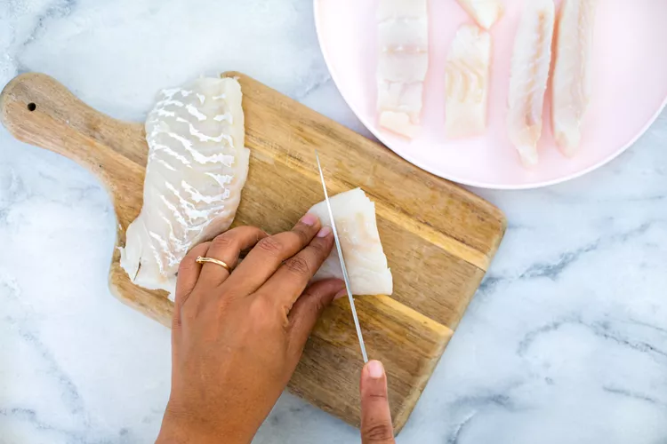
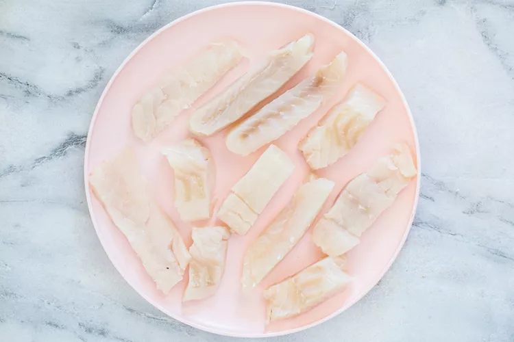
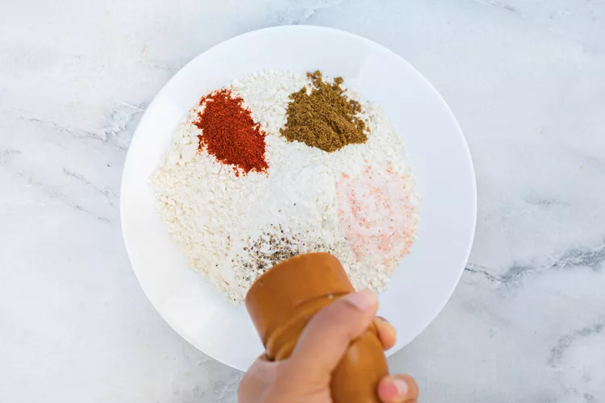
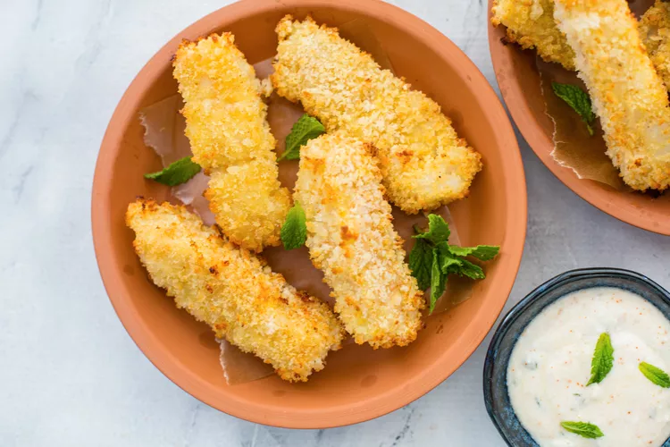

If you are looking for a fish sticks recipe that packs a punch and sets itself apart, then look no further! My family absolutely loves these fish sticks. Crispy on the outside and flaky on the inside, garam masala fish sticks are a breeze to make and a great way to introduce spices to the kids.
Just a few simple ingredients and an oven are all you need to put this delicious finger food together. A flour coating seasoned with garam masala and cayenne powder followed by panko breading gives the fish sticks a satisfying crunch.
Line a baking sheet with parchment paper or a silicone baking mat and spray with cooking spray and set aside.
Using paper towels, pat the fish dry on both sides.
Cut the fish fillet into 3/4-inch wide, finger-length pieces.
Sprinkle the fish sticks with salt.
In a medium bowl, combine the flour, garam masala, and cayenne powder and season with salt and pepper. In another medium bowl, whisk together the egg and milk and season lightly with salt. In a third medium bowl, add the panko and season with salt and pepper.
Working with one fish stick at a time, dip it into the flour mixture, ensuring it is coated evenly. Dip in egg wash next, letting any excess briefly drip off, then coat in the panko. Place on the prepared baking sheet.
Repeat with the remaining fish sticks and make sure all sides of the fish sticks are well coated.
Spread the fish sticks out on the baking sheet in a single layer. Spray the tops with cooking spray.
Bake the fish sticks until they are cooked through and crispy on the outside, 12 to 15 minutes, flipping halfway through baking. They will not be especially brown.
Sprinkle the fish sticks with salt. Serve them warm with a dipping sauce of your choice.
